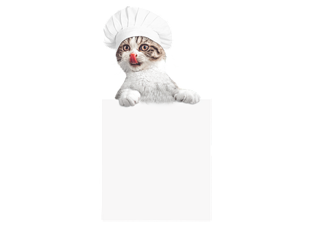

Odin Recipes: Get Your (Indoor Electric) Grill On
Indoor Electric Grill Recipes
If you have an indoor electric grill and you want to make some awesome food with it, check out the recipes below!
If you have an indoor electric grill and you want to make some awesome food with it, check out the recipes below!